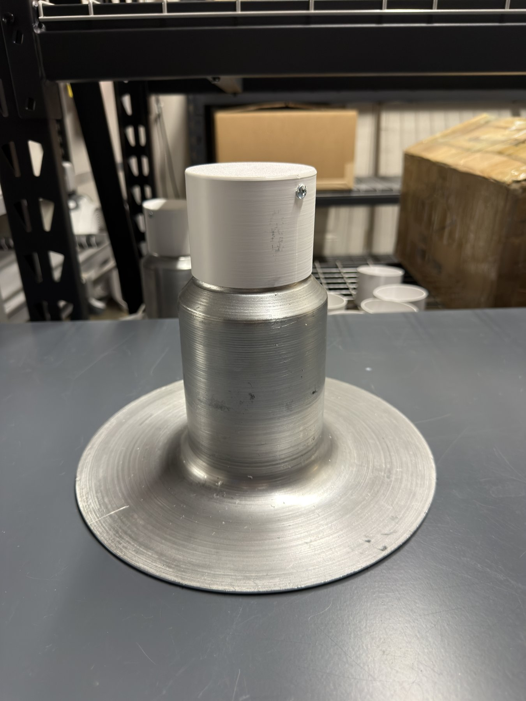

Work Instructions
A batch of about 100 aluminum bases gets the white temporary cap only — no vent body, sleeve, or hood. Cap each base, then pack them eight to a box.
Push the white temporary cap down onto the standpipe until it seats.

Drive the screw through the cap into the standpipe so the cap cannot pull off.
Set the cardboard cross divider in the box. Stand four capped bases upright — flange down, cap up — one in each section.
Lay four more bases sideways on top: each flange against a box wall, capped standpipe pointing to the center. Turn each one 90° from the last so they nest into a pinwheel.
Close the flaps and seal like any box: gummed tape in an H pattern, ReDry-printed tape strip on top.